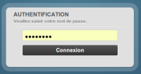
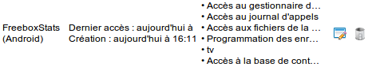
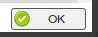

Pour accéder aux statistiques de la Freebox, l'application a besoin de droits supplémentaires. (Cela ne sera plus nécessaire dans une mise à jour prochaine du firmware de la Freebox.)
Pour que l'application puisse fonctionner, veuillez suivre les étapes suivantes depuis un ordinateur (conseillé), ou depuis le navigateur de votre appareil :
- Depuis votre navigateur, accédez à l'URL http://mafreebox.freebox.fr
- Si nécessaire, connectez-vous en utilisant le mot de passe de la Freebox :

- Double-cliquez sur l'icône "Paramètres de la Freebox"

- Entrez dans la Gestion des accès
- Sélectionnez l'onglet Applications

- Dans la liste, trouvez la ligne correspondant à FreeboxStats, et cliquez sur le bouton de modification :

- Cochez la première case, "Modification des réglages de la Freebox"
- Validez

- Dans l'application, cliquez sur le bouton "Terminé", en haut à droite de l'écran